Using models: tiles, foliage & props
You've imported a model — now put it to work: paint hundreds of it across the hills as foliage, place a single copy as a solid hero prop, turn your own builder creation into a reusable kit-piece, and learn honestly what “use a model as a terrain tile” can and can't mean here.
res://tutorial/guide/model_uses.tscn: a sculpted hill with a courtyard of imported .glb models — fountain, pillars, round trees and stones — plus a placed stone, a builder-made prop and two custom foliage items ready to paint.What you'll learn
- The five places a model can be used in an MST world, and why the same
.glbbehaves differently in each. - Why some props in the demo look like plain grey blobs — and how one click brings them to life.
- Models as foliage: Add Mesh / Scene…, painting, erasing, Fill Terrain, and every placement and filter setting that matters for your own model.
- Models as placed props: instancing, sitting it on the ground, the pixel look, and collision so the player can stand on it.
- Builder meshes as reusable props: Save Branch as Scene, then reuse it as a prop or as foliage.
- The terrain-tile question answered honestly, plus other uses (Stamp images, ground textures).
This page uses models that are already in the project. Getting a file into the project and tuning its import settings is page 11 · Importing models. Everything here uses the models that ship with the addon under res://addons/MarchingSquaresTerrain/assets/ — courtyard/ (round tree, fountain, pillar, stone ring), rocks/ (about 40 stones) and characters/fox/.
A few Godot words first
- Node
- One object in a scene — like an Instance in Roblox's Explorer. A
Node3Dis a node with a position in 3D space. - Scene /
.tscn - A saved tree of nodes. An imported
.glbbehaves like a little scene too — like a Model in Roblox's Toolbox. - Instance (verb)
- To place a copy of one scene inside another. Edits to the original flow into every copy — like a Roblox Package.
res://- “The project folder”.
res://tutorial/guide/model_uses.tscnis the filetutorial/guide/model_uses.tscnin the project. - Inspector
- The right-hand panel listing the selected thing's settings — Roblox's Properties.
- Dock
- A panel docked at the edge of the editor: Scene (Roblox's Explorer), FileSystem, Inspector…
- Resource
- A reusable data file (or data stored inside a scene). A Mesh is a resource holding a shape; a PackedScene is a resource holding a whole saved scene.
- PixelScatterItem
- The addon's “foliage brush” resource: one entry in the Foliage palette. It says what to scatter (a built-in shape or your model) and how (size, spin, slope rules…).
- PixelObject
- An addon node you put above a model to override its pixel-art look (outline, pixel size, palette, dither).
- StaticBody3D + CollisionShape3D
- Godot's standard “solid, non-moving thing” pair. Roughly a Roblox Part with Anchored and CanCollide on.
The big idea: one model, five jobs
In Roblox you drag a model out of the Toolbox and it simply sits in the world. Here, where you put the model decides what it does. The same round_tree.glb can be a forest you paint, or one tree you place by hand.
.tscn, then reuse it as a prop or as foliage.
4 · Terrain tile?Not a feature — the terrain is sculpted, not tiled. Here's the closest you can get.
5 · Other usesStamp an image into terrain height; use images as ground textures.
Think of it this way: drop a model in a scatter item and you paint it like Roblox's grass decoration — except you supply the model. Instance it directly and it's a single Part/Model, just like a Toolbox drop. Feed a builder mesh back in and it's a reusable kit-piece, like a Package. What there is no equivalent of is a Roblox “tile kit” where each map square is a model — MST terrain is sculpted.
Your follow-along scene
Open res://tutorial/guide/model_uses.tscn (double-click it in the FileSystem dock). It's built on the addon's courtyard demo and contains a worked example of every use on this page:
- Placed props — the courtyard's fountain, pillars, round trees and stones. Each is a
.glbinstanced as aNode3D, all under oneCourtyardPixelObject, each with a StaticBody3D → CollisionShape3D child. - A placed
.glbyou add yourself —stone_tallB2(fromrocks/stone_tallB.glb) with its own collision box. - A builder-mesh prop —
Courtyard/PixelBuilderMesh, an instance ofmodelled_prop.tscn(the green arch/box). - Two custom foliage items in the Foliage palette: Round Tree (custom model) (Form Custom, Scene
round_tree.glb, Density 0.03, Scale 0.8–1.3, Random Yaw 360, Slope Max 45) and modelled prop (Form Custom, Scenemodelled_prop.tscn, Scale 2.5–4).
The scene ships with no painted foliage — every painted instance was cleared before saving, so the hill is yours to fill.
Some clips on this page were filmed in the addon's bigger res://demo/hex_island.tscn sandbox (the hex island with the pond and the stone fort). The steps are identical in either scene.
Why are some props plain grey blobs?
Open the Foliage palette in hex_island and you'll see items called Tree, Pine, Bush, Rock, Flowers and Pebbles (small hexes) — and every one of them is the same grey rock. On the ground they look like grey boulders too.
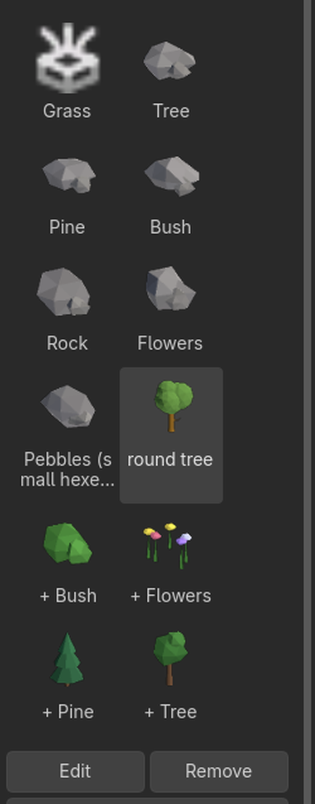
This isn't a bug. Those six items were left by the demo author with no model and no shape chosen:
- None of them has a Scene or Cage (no model).
- None of them sets Form, so it stays at its default — Rock.
- The built-in Rock shape is a stony grey. So all six draw the same grey rock, whatever their name says.
The proof: import any real model into an item and it shows up in full colour, right next to the grey ones. The + presets (+ Bush, + Flowers, + Pine, + Tree) are coloured too, because they set a proper Form.
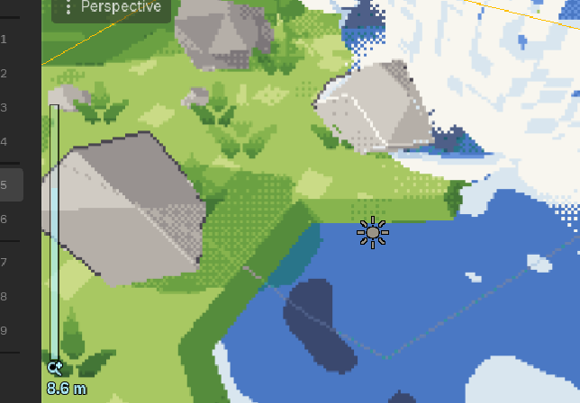
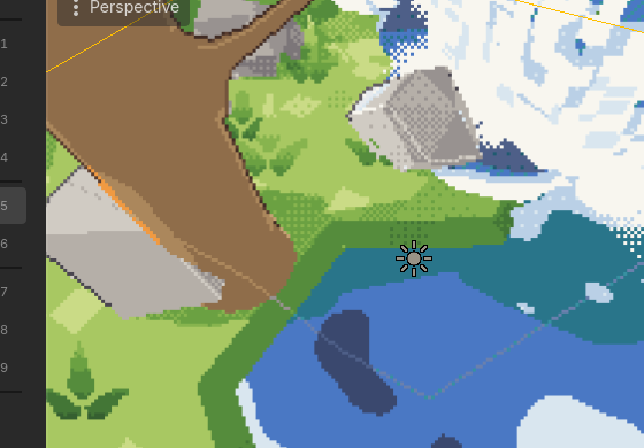
Drag the divider: the same patch of hex_island before and after painting the coloured round tree model next to the grey placeholders.
They're greybox placeholders: scatter items with no model or Form assigned yet. Give the item a Form (Tree, Pine, Bush…) or your own model and it comes to life. That's what the rest of this page is about.
It's like a grey default Part named “Tree” — the name doesn't make it a tree. You still have to give it a mesh.
Guided tutorial: paint a grove of your own trees
Five minutes, start to finish. You'll turn round_tree.glb into a foliage brush and paint with it.
- In the Scene dock, click the
MarchingSquaresTerrainnode. The terrain toolbar appears down the left of the 3D view. - Pick the Foliage tool (toolbar slot 5, or press 5 with the mouse over the 3D view). The Foliage palette opens on the right and the foliage strip appears under the view.
- At the bottom of the palette, click Add Mesh / Scene…. An Open a File dialog appears.
- Open
addons→MarchingSquaresTerrain→assets→courtyard, pickround_tree.glband click Open. - A new round tree entry appears in the palette, in colour, already selected. The hint bar now reads “Painting round tree”.
- Left-drag (LMB-drag) across gentle grass. Trees appear under the brush. Do a few overlapping strokes for a thicker grove.
- Don't like it? Ctrl+Z removes the whole last stroke. Right-drag erases trees under the brush.
model_uses.tscn: a dense, legible green grove grows under the brush.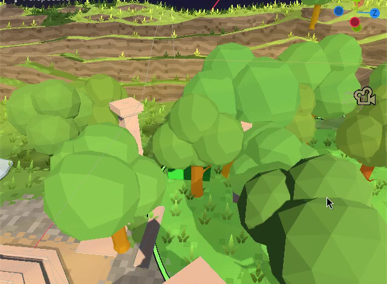
A freshly imported model only paints on ground up to 35° steep. If your strokes leave nothing behind, you're probably on a slope. Paint somewhere flatter, or raise Slope Max — see Filters.
Use 1 · Your model as foliage / decoration
This is the main way to use models in an MST world. A PixelScatterItem holds your model in its Scene or Cage slot; you add it to the Foliage palette and paint or fill with it. The Foliage tool itself — palette, strip, brush size, density, grass — is covered fully on page 05 · Foliage, grass & flowers. This section covers what's specific to your own models.
The Add Mesh / Scene… button
It's the full-width button at the bottom of the Foliage palette. Its tooltip: “Adds a prop from a mesh (.mesh / .tres / .res / .obj) or a scene / model (.tscn / .glb / .gltf / .blend / .fbx) and selects it.” Clicking it opens Godot's file dialog. Click the dots to tour it.
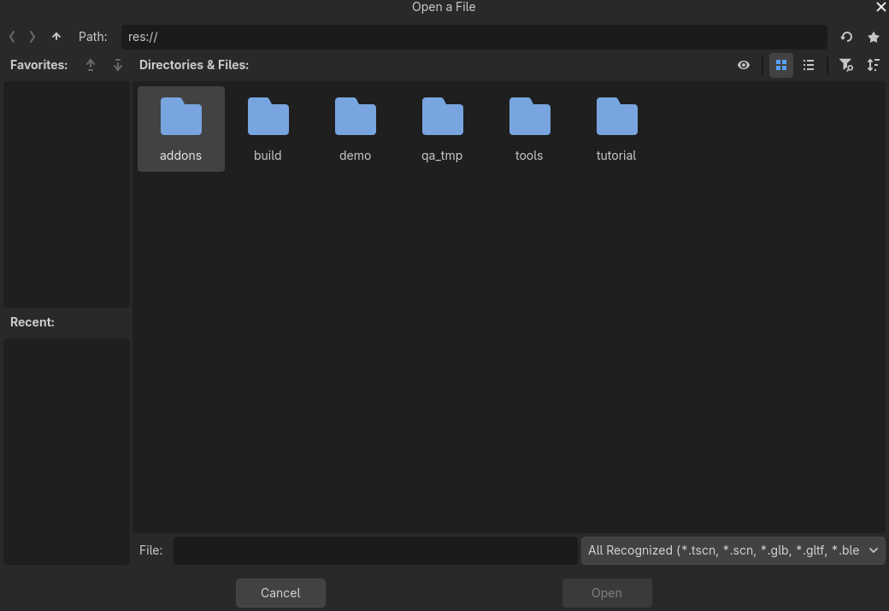
When you pick a file:
- A new PixelScatterItem is created and added to the palette.
- It's named after the file, with underscores turned into spaces:
round_tree.glb→ “round tree”. - It's selected, ready to paint.
- It's one undoable step. The Output panel logs
terrain add scatter item round_tree.
| You pick… | Lands in | Form becomes |
|---|---|---|
A scene / model: .tscn .scn .glb .gltf .blend .fbx | Scene slot (PackedScene) | Custom |
A bare mesh: .mesh .tres .res .obj | Cage slot (Mesh) | Custom |
.blend and .fbx appear in the filter, but they only import if Godot is set up for them (see page 11 · Supported formats). .glb is the safe choice.
It's like turning a Toolbox model into a terrain-decoration brush. Scene ≈ a whole Roblox Model (several parts with their materials); Cage ≈ the mesh of a single MeshPart.
The scatter item your import made
Click Edit under the palette (or double-click the entry) to see the new item in the Inspector.
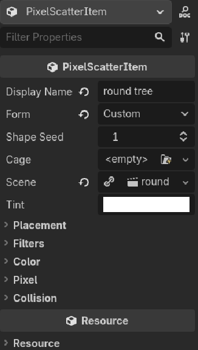
How your model gets drawn
Behind the scenes the addon loads your model once, finds every mesh inside it, and draws each one hundreds of times in a single batch (GPU instancing — the reason you can paint thousands of trees without slowing down).
Your materials are kept. A standard material's colour, its colour texture and its alpha cut-out are all carried over, and vertex colours are respected. A custom shader material is used as-is. That's why round_tree paints green and brown, not grey.
On top of your materials, the item's Tint multiplies the colour, and Hue Jitter / Value Jitter (Color group) vary it slightly per copy.
Painting, erasing and undo
Painting your model uses exactly the same gestures as the built-in foliage. The hint bar at the bottom of the 3D view always reminds you: “Painting round tree · LMB-drag: paint · RMB / Shift+LMB: erase · Shift+wheel: size · palette on the right: pick what to paint”.
round_tree onto the hill below the stone fort in hex_island.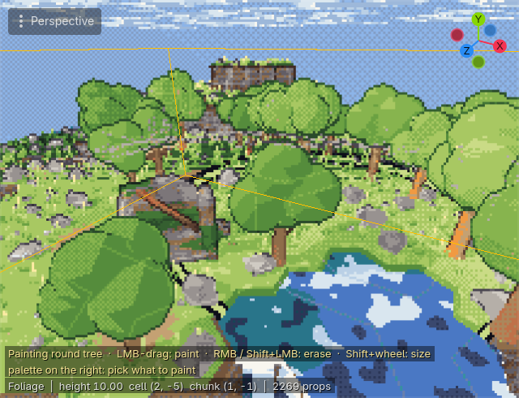
hex_island.model_uses: the props count drops from 13 to 1.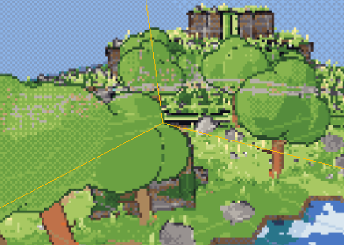
The brush spaces copies by each model's footprint × scale, so a large model like round_tree lands only a few copies per stroke. Paint several overlapping strokes for a thick grove, or lower Scale Min/Max. Small models (like stone_largeA) fill densely.
Painting several models at once, and a second model
Ctrl+click palette entries to select more than one; one stroke then paints a mix. You can mix your own model with a built-in + preset.
Every model you import becomes its own palette entry. Here a rock from rocks/stone_largeA.glb is imported the same way and painted into a boulder field. It keeps its real light-stone colour.
stone_largeA.glb with Add Mesh / Scene, then paint a dense field of it.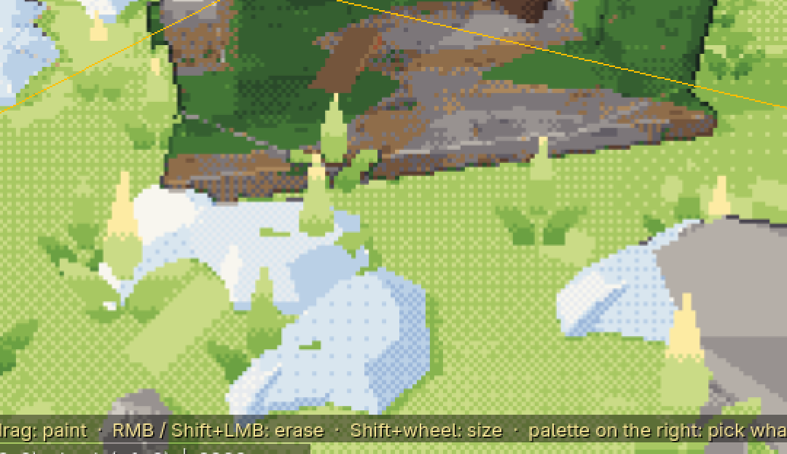
Paint vs Fill Terrain
Fill Terrain (in the Foliage strip) scatters the selected item over the whole terrain by the item's own rules — no brushing. Clear removes every copy. Both are described on page 05; with your own model the difference looks like this:
round_tree on hex_island: sparse, because an untuned import has a low own Density.model_uses: the whole hill becomes a forest.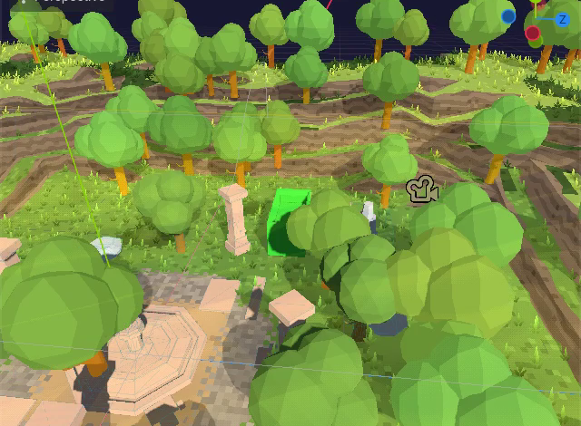
Hand-painting puts trees exactly where you brush; Fill Terrain spreads them everywhere the rules allow.
Fill Terrain uses the item's own Placement ▸ Density, not the Density slider in the bottom strip (that one only affects hand-painting). Raise the item's Density for a fuller fill.
Placement & Filters for your model
An imported model starts with the default rules. Two groups in the item's Inspector matter most:
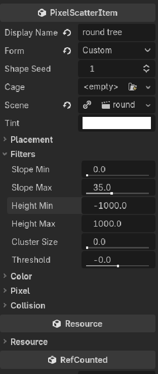
Filters decide where the model may go:
- Slope Min / Slope Max — default 0 / 35°. When you paint, the strip's own Slope Min/Max and the item's are both applied, so a fresh import won't land on anything steeper than 35°. This is the number-one reason “nothing paints”.
- Height Min / Height Max — default −1000 / 1000 (anywhere).
- Cluster Size and Threshold — clump copies together using noise.
Placement decides how each copy looks. For your own model you'll usually set:
- Scale Min / Max to taste — big trees want fewer, spaced copies.
- Random Yaw — already 360 by default, so copies face every way. Lower it only if they should all face roughly one way.
- Align to Normal if they should tilt with the slope (rocks yes, trees no).
Inspector number fields are very touchy to drag. Double-click the field, press Ctrl+A, type the value and press Enter.
The by-hand route: duplicate a preset
Add Mesh / Scene… is the one-click version of this. To do it manually:
- In the FileSystem dock, open
res://addons/MarchingSquaresTerrain/scatter_presets/(rock, bush, tree, pine, flowers). - Duplicate one of the
.tresfiles (right-click ▸ Duplicate) and open it in the Inspector. - Set Scene (or Cage) to your model and Form to Custom.
- Select the terrain and drag the new
.tresinto its Foliage ▸ Scatter Items list in the Inspector. The palette picks it up.
Starting from a preset is handy when you want its tuned placement values (e.g. the rock preset's sunk-in Y Offset) for your own model.
Every model gets the pixel look
The chunky pixels and dark outlines come from the scene's Pixel Renderer, which pixelates everything — terrain, foliage and any model you place, wherever it is. You don't have to do anything to a model to make it pixel-art. Toggle Pixel Preview in the 3D view's top bar to compare.
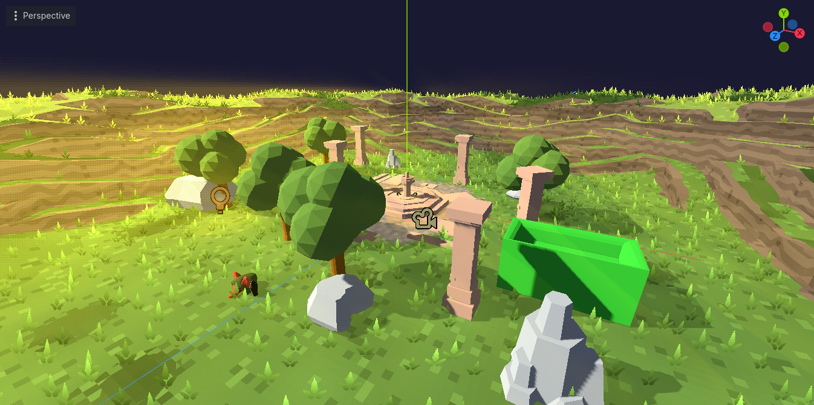
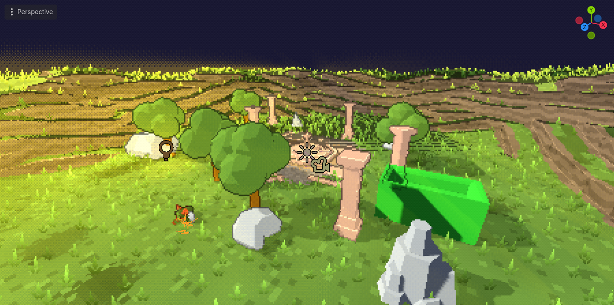
The courtyard models with Pixel Preview off and on. (The thin cyan wireframes in the “on” view are the props' collision shapes, which the editor draws as a guide; they don't appear in the game.)
hex_island: terrain and every model or prop switch between smooth and pixel together.The full pixel-look story (renderer settings, palettes, outline colours) is page 07 · The pixelizer. To change the look of one prop, see PixelObject below.
Use 2 · Your model as a placed prop
When you want one particular object in one particular spot — a fountain, a statue, a gate — you place it directly, like dragging a model out of Roblox's Toolbox. The recipe the courtyard uses:
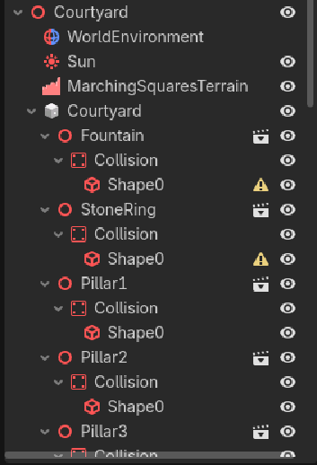
demo/courtyard.tscn: every .glb is a Node3D under one Courtyard PixelObject, each with Collision → Shape0.Four steps, each below:
- Instance the model into the scene.
- Sit it on the terrain (move / rotate / scale).
- Optional: a PixelObject to override its look.
- Add collision so the player can't walk through it.
Then run the scene with F6 and walk on it.
1 · Instance the model
- In the Scene dock, select the scene's root node (the top one).
- Click Instantiate Child Scene — the chain-link icon next to the + (Add Child Node) at the top of the Scene dock. The Select Scene dialog opens.
- Turn the Addons toggle on (bottom right) — the addon's rocks live under
res://addons/…and are hidden otherwise. - Type
stone_tallB. The matchstone_tallB.glbis highlighted; press Enter. - A new
stone_tallB2node appears under the root, selected, at the scene origin.
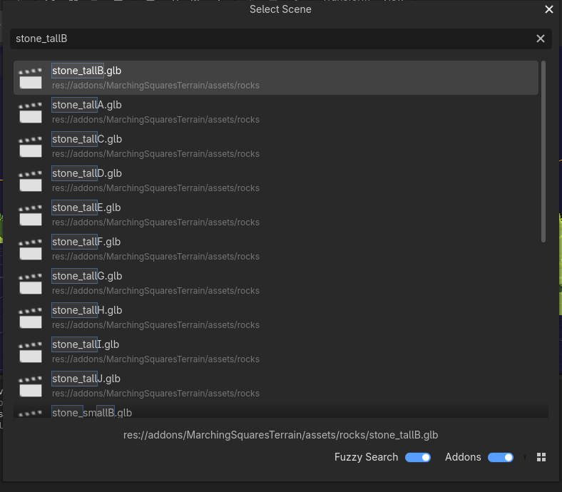
You can also drag a .glb from the FileSystem dock straight into the 3D view or onto a node — see page 11 · Putting a model into a scene.
2 · Sit it on the terrain
A new instance lands at the origin, which may be in the air or underground. The courtyard clearing sits at world height Y ≈ 0 (all its pillars and the fountain are at Y = 0), so setting the stone's Position Y to 0 seats it on the grass.
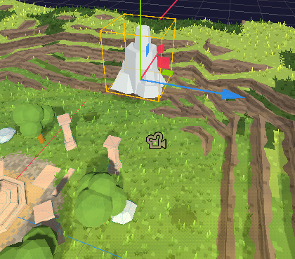
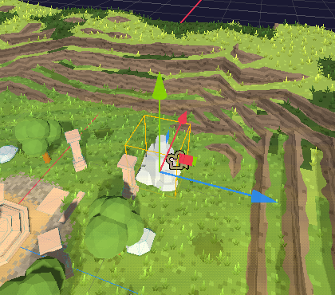
Drag the divider: the placed stone before and after setting Position Y to 0.
Two ways to place a prop, both fine:
| Way | How | Roblox twin |
|---|---|---|
| Gizmo | W Move (drag the arrows), E Rotate (drag the rings), R Scale. Drag the green arrow down to lower it. F frames the selected node. | Move / Rotate / Scale tools |
| Inspector | Expand Transform and type Position / Rotation / Scale. Double-click, Ctrl+A, type, Enter. | Properties ▸ Position / Orientation / Size |
With the Roblox UI toggle on, the top of the 3D view becomes a Studio-style ribbon with these tools and grid snapping:
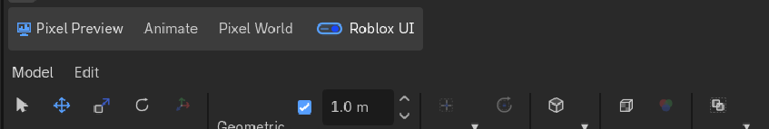
The ribbon is covered fully on page 09. It matters for placed props; it does not change the Foliage workflow, which looks the same with Roblox UI on or off.
3 · Optional: a PixelObject for per-prop look
Your placed prop is already pixelated by the global renderer. A PixelObject node lets you override the look for everything beneath it — turn its outline on or off, put its outline in a different colour group, change its pixel size, palette or dither. Drop your prop under a PixelObject (the courtyard wraps all its props in one called Courtyard). Nested PixelObjects refine their parent's settings.
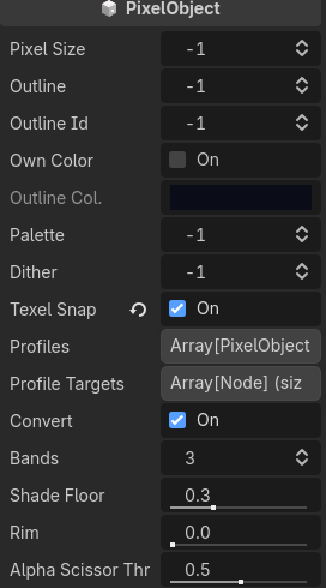
−1 means “inherit” — use the parent PixelObject's value, or else the renderer's.
The other fields (Own Color, Outline Col., Texel Snap, Convert, Bands, Shade Floor, Rim, Alpha Scissor) are explained on page 07 · Pixel Object.
It never damages your model. A PixelObject restores the model's original materials when you remove it, and while the editor saves.
PixelObjectProfile is a resource holding the same overrides — active, pixel_size, outline, outline_id, palette, dither, supersede_contour_tint and contour_tint (default a very dark blue). It only changes anything if at least one value is set. See page 07.
Like grouping Parts into a Model and giving the Model its own Highlight: the settings apply to everything inside.
4 · Add collision
An imported model has no collision by default — the player would walk straight through it. Add Godot's standard solid-object pair:
- Select your prop (
stone_tallB2) in the Scene dock. - Click + (Add Child Node). In the Create New Node dialog type
StaticBody3D, select it and click Create. - With the new
StaticBody3Dselected, click + again, searchCollisionShape3D, Create. - In the CollisionShape3D's Inspector, click the Shape dropdown ▸ New BoxShape3D. A box outline appears around the prop in the 3D view; size it with its handles or in the Inspector.
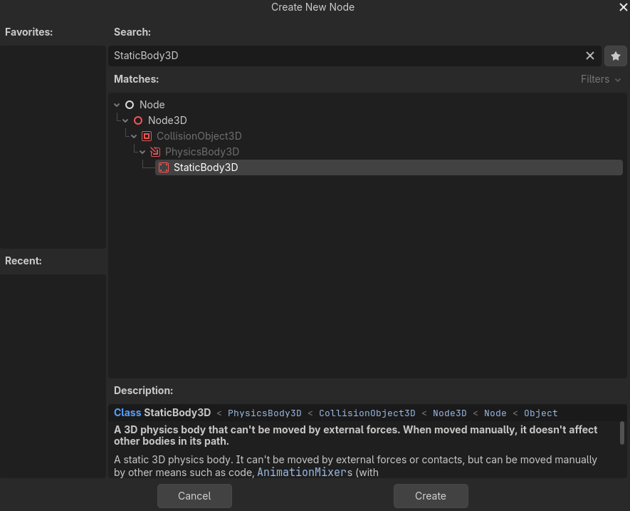
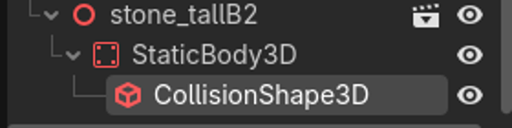
stone_tallB2 → StaticBody3D → CollisionShape3D.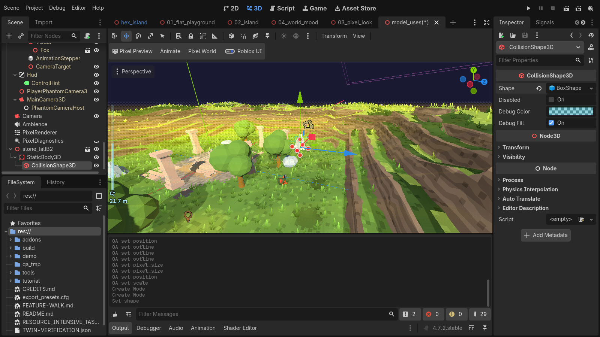
You can let the import generate collision for you instead (page 11 · Advanced Import Settings ▸ Generate ▸ Physics). And foliage doesn't need these nodes at all — scatter items have their own Collision group (None / Cylinder / Box). The StaticBody3D route is for single placed props.
In Roblox every Part collides unless you untick CanCollide. In Godot a model is visual only until you give it a StaticBody3D (≈ Anchored, CanCollide on) with a CollisionShape3D (≈ CollisionFidelity = Box).
Try it: run the scene and stand on it
Press Ctrl+S to save, then F6 to run the current scene. The player spawns in the courtyard, and you can jump onto the stone — proof the collision works. Running and the demo player's controls are on page 13 · Playtesting & exporting.
Use 3 · Builder meshes as reusable props
On page 09 and page 10 you built shapes with the Builder (a PixelBuilderMesh). Save one as its own scene and it becomes a kit-piece you can drop anywhere — as a placed prop or as foliage — just like a .glb.
New parts you insert with the Builder start out solid Roblox Medium Stone Grey, whatever mesh is selected — they don't copy its colours. The box in modelled_prop.tscn has been coloured green, which is why it stands out below.
Save it as its own scene
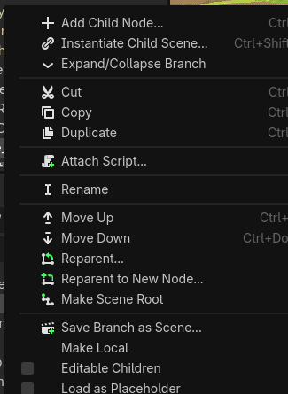
- In the Scene dock, right-click the builder mesh you made.
- Choose Save Branch as Scene… and save it, e.g. as
res://tutorial/guide/modelled_prop.tscn.
tutorial/guide/modelled_prop.tscn in the project is exactly this: a PixelBuilderMesh arch/box saved this way. The steps below use it.
Save Branch is disabled on a node that is already an instanced scene. Godot says “Can't save the branch of an already instantiated scene… use Scene ▸ New Inherited Scene instead”. Save-Branch the original builder mesh you made, not a copy you already instanced.
Like right-clicking a Model ▸ Save to Roblox / Convert to Package: it becomes a reusable asset you can insert again and again.
Place it as a prop
Same flow as a .glb: select the root ▸ Instantiate Child Scene ▸ type modelled_prop ▸ Enter.
modelled_prop.tscn as a child. The editor switches into Builder mode, because the new node is a builder mesh.Because the root of modelled_prop.tscn is a PixelBuilderMesh, selecting it flips the editor into Builder mode (the left ribbon shows Builder tools). It isn't a bug; select another node to leave.
When you Save Branch as Scene a mesh whose parts are offset from the root origin, the saved scene keeps that offset: the root PixelBuilderMesh sits at (0, 0, 0) but the shape lives somewhere else. Drop that scene in at Y = 0 and the shape floats or sinks. The fix is one field: select the child mesh node (Box), set its Position to (0, 0, 0), then save the prop scene — now the shape sits exactly on the root origin, and the root's Position is the shape's position. The guide's modelled_prop.tscn has already been fixed this way, so instancing it at Y = 0 seats it on the ground.
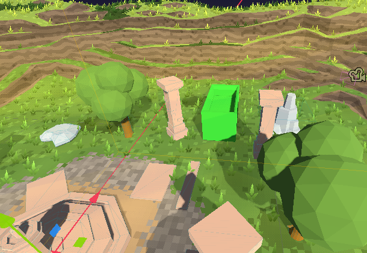
Use it as foliage
Add Mesh / Scene… accepts .tscn, so a builder scene can be painted like any model.
- Select the terrain ▸ Foliage (5) ▸ Add Mesh / Scene….
- In the Open a File dialog, type
res://tutorial/guide/modelled_prop.tscninto the File field and press Enter. - A modelled prop entry appears, selected. Its Inspector shows Form = Custom, Scene = modelled_prop.
- Raise Placement ▸ Scale Min / Max (e.g. 2.5 – 4) so it's legible, then paint or Fill Terrain — the builder props land on the terrain just like a
.glbmodel.
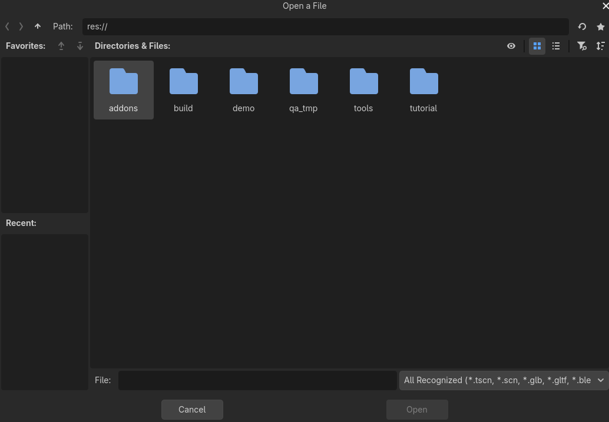
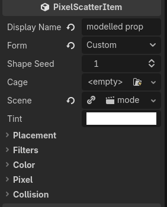
.tscn lands in the Scene slot with Form = Custom.At the default scale (about 0.8–1.2) a builder prop paints small and gets lost in the grass. Raise Scale Min / Max — 2.5–4 worked well here.
Use 4 · Models as terrain tiles? (the honest answer)
Some Roblox games use “tile kits”: every square of the map is a model you place. MST has no feature that turns a model into a terrain tile. The terrain is a height field — a grid of heights (square cells or hex columns) that you sculpt. Its “tiles” are grid cells, not swappable models. The terrain's contents resource stores heights, colours, a grass mask and scatter data — not a set of mesh tiles.
The closest real ways to get “one model per cell”:
| Feature | What it gives you |
|---|---|
| Fill Terrain + Per Cell Max | Keep your item's Placement ▸ Per Cell Max (1–16) at 1 — its default — and Fill Terrain: at most one copy of your model per grid cell, following the item's rules. On a hex grid this reads like model-per-hex. (See Paint vs Fill Terrain.) |
| Small Hexes | Tick Placement ▸ Small Hexes on the item, then Fill Terrain: one small prop per sub-hex cell. The closest thing to a tiled look — hex_island's Pebbles (small hexes) item does this. |
| Hex columns | The terrain's own hex cell meshes are generated from height and edge settings. You can't swap in your own model for them. |
| Hex Maps | The terrain's Hex Maps settings (Map Window Radius / Focus / Margin / Refresh) are about streaming very large hex maps — not a tile palette. |
MST terrain works like the Roblox Terrain Editor (sculpt and paint), not like a tile kit. Shape the land on page 03, then decorate it with models using foliage and props.
Use 5 · Other uses: images as terrain
- Stamp an image into the terrain. The Stamp tool (left terrain toolbar, below Settings) stamps a greyscale image into the terrain's height, and can paint texture too. A model can't shape terrain, but an image can. See page 03 · the tools (Stamp tab).
- Images as ground textures. Importing an image as one of the terrain's texture slots is page 04 · Use your own image as a texture.
Control reference
Every control used on this page. Type to filter (try “slope”, “collision”, “scene” or “F6”).
Foliage tool terrain toolbar
Opens the Foliage palette and strip. Select the terrain node first.
- Shortcut
- 5
Add Mesh / Scene… palette
Creates a new PixelScatterItem from a model or mesh file, named after the file, and selects it. One undoable step.
- Accepts
.tscn .scn .glb .gltf .blend .fbx→ Scene;.obj .mesh .tres .res→ Cage
Edit palette
Shows the selected item in the Inspector. Double-clicking an entry does the same.
Paint foliage
Places copies of the selected item(s) under the brush.
- Mouse
- LMB-drag
Erase foliage
Removes copies under the brush.
- Mouse
- RMB-drag or Shift+LMB
Brush size foliage
Resize the foliage brush.
- Shortcut
- Shift+wheel
Multi-select palette
Select several items; one stroke paints a mix of them.
- Shortcut
- Ctrl+click
Fill Terrain strip
Scatters the selected item over the whole terrain using the item's own Density and Filters.
Clear strip
Removes every copy of the item from the terrain.
Strip Density strip
How dense hand-painting is. Does not affect Fill Terrain.
Strip Slope Min / Max strip
Limits painting by steepness. Combined with the item's own Slope Min/Max — the stricter one wins.
Undo editor
Undoes the last stroke, Fill, Clear or import.
- Shortcut
- Ctrl+Z
Display Name item
The palette label. Set from the file name on import.
Form item
Built-in procedural shape, or Custom to use your Scene/Cage. Left unset it defaults to Rock — the cause of grey placeholders.
- Options
- Custom, Rock, Bush, Tree, Pine, Flowers
Shape Seed item
Varies a procedural shape. Unused when Form is Custom.
Cage item
A bare Mesh to scatter.
- Type
- Mesh
Scene item
A model or saved scene to scatter. Every mesh inside it is drawn; its materials (colour, texture, alpha cut-out, vertex colour) are kept.
- Type
- PackedScene
Tint item
Multiplies the model's colour. White = unchanged.
Hue Jitter / Value Jitter Color
Random colour / brightness variation per copy.
Density Placement
The item's own density, used by Fill Terrain. Raise it if Fill looks sparse.
Scale Min / Scale Max Placement
Random size range per copy. Big models: lower it or accept sparse strokes. Small builder props: raise it (2.5–4).
Random Yaw Placement
Random spin around the vertical axis, in degrees. 360 (the default) lets copies face any way; 0 keeps them all facing the same way.
- Range
- 0 – 360
Align to Normal Placement
How much a copy tilts with the slope. 1 for boulders, 0 for upright trees.
Y Offset Placement
Raise or sink each copy.
Per Cell Max Placement
Max copies per grid cell — the “one model per cell” knob.
- Range
- 1 – 16
Small Hexes Placement
Place one small prop per sub-hex cell with Fill Terrain.
- Type
- on/off
Ground Slots / Seed Placement
Which painted ground textures it may grow on; random seed for the layout. See page 05.
Slope Min / Slope Max Filters
Steepness the item accepts. Fresh imports: 0 / 35° — raise Slope Max to paint on steeper ground.
Height Min / Height Max Filters
Terrain heights the item accepts.
- Default
- −1000 / 1000
Cluster Size / Threshold Filters
Clump copies together using noise.
- Default
- 0 / 0
Collision Collision
The scatter item's own collision for every copy.
- Options
- None, Cylinder, Box
Scatter Items terrain
The list of PixelScatterItems shown in the palette. Drag a duplicated preset .tres here for the by-hand route.
Instantiate Child Scene Scene dock
Opens Select Scene to instance a .glb/.tscn as a child of the selected node.
Select Scene: Addons dialog
Include files under res://addons/. Needed to find the addon's models.
Select Scene: Fuzzy Search dialog
Match names loosely as you type.
Add Child Node (+) Scene dock
Opens Create New Node: search a node type (StaticBody3D, CollisionShape3D, PixelObject…) and click Create.
Save Branch as Scene… Scene dock
Saves the node and its children as a new .tscn. Disabled on an already-instanced scene.
Transform Inspector
Exact Position / Rotation / Scale. Set Position Y to seat a prop on the ground.
Move / Rotate / Scale / Focus 3D view
Transform gizmos; Focus frames the selection.
- Shortcut
- W / E / R / F
Grid snap ribbon
Snap moves to a grid step (1.0 m) and rotations to an angle step (45°).
StaticBody3D node
Makes its children solid and immovable.
CollisionShape3D ▸ Shape node
The collision shape. Pick New BoxShape3D. Disabled turns it off.
PixelObject node
Per-prop look overrides: Pixel Size, Outline, Outline Id, Palette, Dither (−1 = inherit), plus Profiles.
Pixel Preview 3D view
Toggles the pixel look in the editor.
Roblox UI 3D view
Switches the top bar to the Studio-style Model/Edit ribbon. Doesn't change the Foliage tools.
Save / Run current scene editor
Save, then run just this scene to playtest.
- Shortcut
- Ctrl+S, F6
Troubleshooting
Nothing paints
Almost always the slope limit: fresh imports accept only up to 35°. Raise the item's Slope Max (Edit ▸ Filters) or the strip's Slope Max, or paint on flatter ground.
Only a few copies per stroke
Large models are spaced by their footprint. Paint overlapping strokes or lower Scale Min/Max.
Fill Terrain is sparse
Fill uses the item's own Density, not the strip's. Raise it.
My props are grey blobs
The item has no Scene/Cage and Form is at its default (Rock). Set a Form or a model. See grey placeholders.
Can't find the addon's models in Select Scene
Turn the Addons toggle on.
Prop floats or is buried
Set Position Y to the ground height (Y = 0 in the courtyard), or drag the green Move arrow.
Builder prop disappears underground
The prop scene's mesh is offset from its root. Select the child mesh node, set its Position to (0, 0, 0) and save the prop scene; then the root's Position places the shape. modelled_prop.tscn in this project is already fixed that way.
Save Branch as Scene is greyed out
The node is already an instanced scene. Save-Branch the original, or use Scene ▸ New Inherited Scene.
Editor switched to Builder tools
You selected a PixelBuilderMesh. Expected; select another node.
Player walks through my prop
Add StaticBody3D + CollisionShape3D with a shape, or generate collision on import (page 11).
Builder prop is tiny as foliage
Raise Scale Min/Max to about 2.5–4.
Recipes
A model orchard / grove
Import a tree with Add Mesh / Scene, paint overlapping strokes. Scale Min/Max + Random Yaw 0–360 give natural variety (clip).
A boulder field
Import a rocks/*.glb (small footprint = dense) and paint. Set Align to Normal to 1 so boulders tilt with the slope (clip).
Mixed natural scatter
Ctrl+click two custom models, or a model and a + preset, and paint them together.
A whole forest in one click
Tune the item's Density and Slope Max, then Fill Terrain. Clear and change Seed for a different layout.
A hero prop
Instance a fountain or pillar .glb, seat it, put it under a PixelObject if it needs its own outline, and add StaticBody3D + CollisionShape3D.
A reusable kit-piece
Build it (page 10), Save Branch as Scene, then instance it as many times as you like — or paint it as foliage.
A tidy “one per hex” look
Per Cell Max 1 (or Small Hexes on) + Fill Terrain.
Roblox → MST cheat sheet
| Roblox Studio | Here |
|---|---|
| Drag a Toolbox model into the world | Instantiate Child Scene / drag from FileSystem → a placed prop |
| Terrain grass / decoration | A scatter item — but you supply the model |
| (no equivalent) | Paint hundreds of your model; scatter by slope / height / cluster with Fill Terrain |
| Tile kits (a model per map square) | No equivalent — terrain is sculpted. Closest: Per Cell Max / Small Hexes |
| Anchored + CanCollide | StaticBody3D + CollisionShape3D |
| Properties ▸ Position | Inspector ▸ Transform ▸ Position |
| Convert to Package / Save to Roblox | Save Branch as Scene… |
| Highlight on a Model | PixelObject over a group of props |
Check yourself
Your palette has an item called “Tree” that looks like a grey rock. Is it broken?
No. It has no Scene or Cage and its Form is still the default (Rock). Set Form to Tree, or give it a model (Form = Custom), and it renders properly.
You imported a tree with Add Mesh / Scene, but strokes on a hillside place nothing. Why?
A fresh import's Slope Max is 35°. Raise it in Edit ▸ Filters (or the strip's Slope Max), or paint on flatter ground.
You want one specific statue in the middle of the courtyard that the player can stand on. Which route?
A placed prop: Instantiate Child Scene, seat it with Position Y (or the Move gizmo), then add a StaticBody3D with a CollisionShape3D (New BoxShape3D). Test with F6.
Can you make a model become a terrain tile?
No — the terrain is a sculpted height field, not tiles. The closest is Fill Terrain with Per Cell Max 1 or Small Hexes, which puts one copy per cell.
Related pages
- Importing models — previous: get the model file into the project.
- Foliage, grass & flowers — the full Foliage tool, palette and PixelScatterItem reference.
- The pixelizer — the pixel look, outline colours and PixelObject in depth.
- Greyboxing with the Roblox UI and Modelling: faces, edges & vertices — build your own props.
- Sculpting terrain (Stamp) and Painting, textures & tint — images as terrain.
- Playtesting & exporting — next: run your world and walk around.